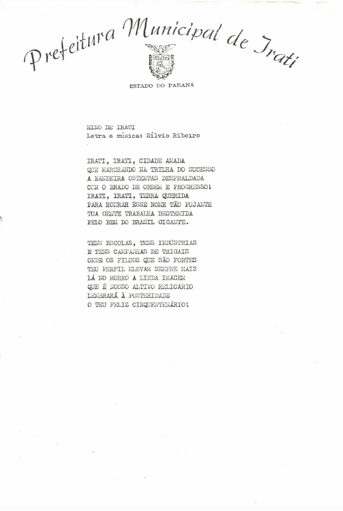
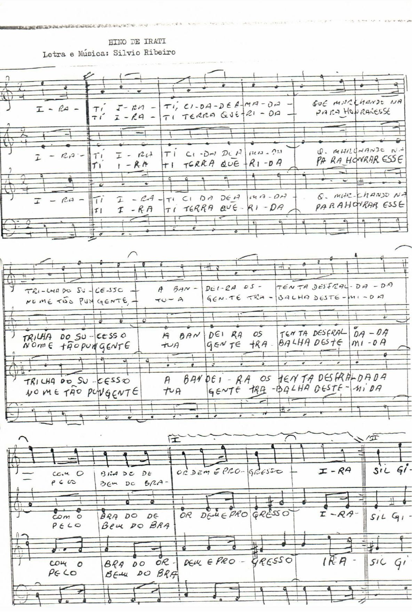
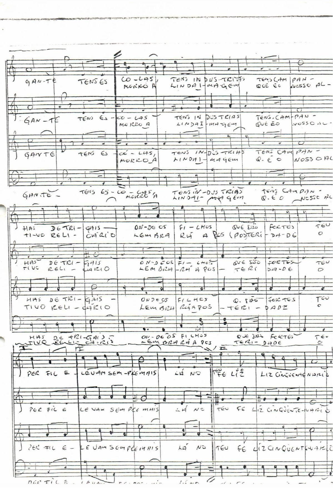
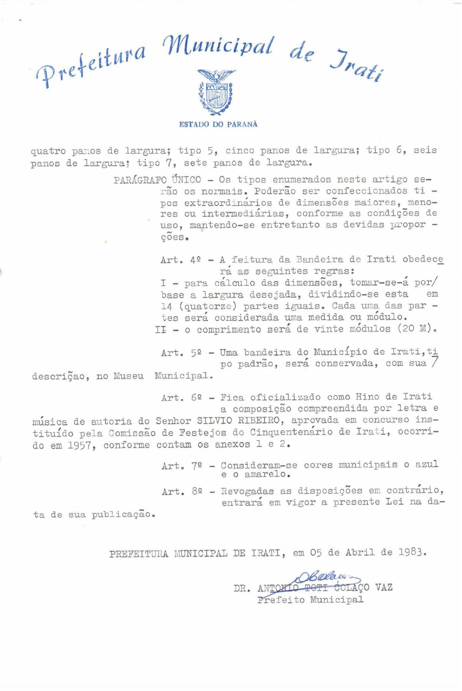

Irati, Irati, cidade amada
Que marchando na trilha do sucesso
A bandeira, ostentas desfraldada
Com o brado de ordem e progresso
Irati, Irati, terra querida
Para honrar este nome tão pujante
Tua gente trabalha destemida
Pelo bem do Brasil gigante
Tens escolas, tens indústrias
E tens campanhas de trigais
Onde os filhos que são fortes
Teu perfil elevam sempre mais
Lá no morro a linda imagem
Que é nosso altivo relicário
Lembrará à posteridade
O teu feliz cinquentenário.
Hino
Hino Instrumental
   Adotado desde 1957, este hino foi composto especialmente para os festejos do 50º aniversário de Irati. A composição foi aprovada em concurso instituído por meio da comissão responsável pelos eventos e comemorações.
Foi oficializado como Hino do Município através da lei municipal nº 571, de 05 de abril de 1983.